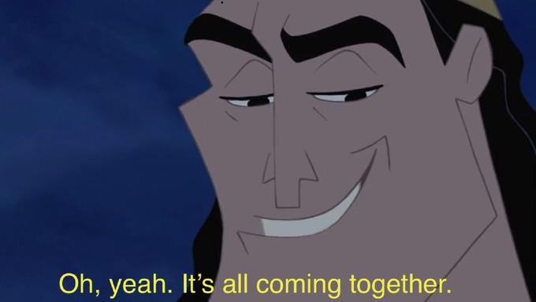
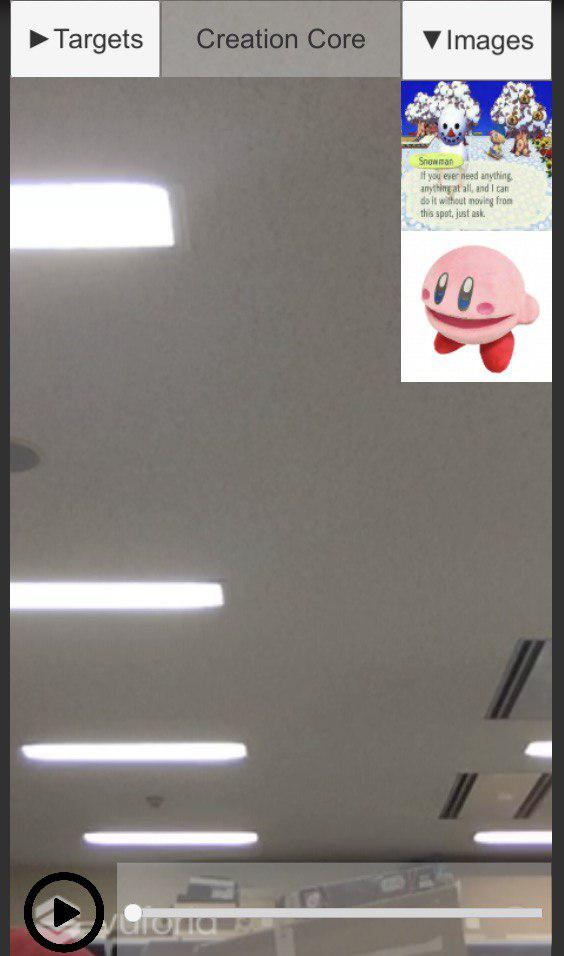
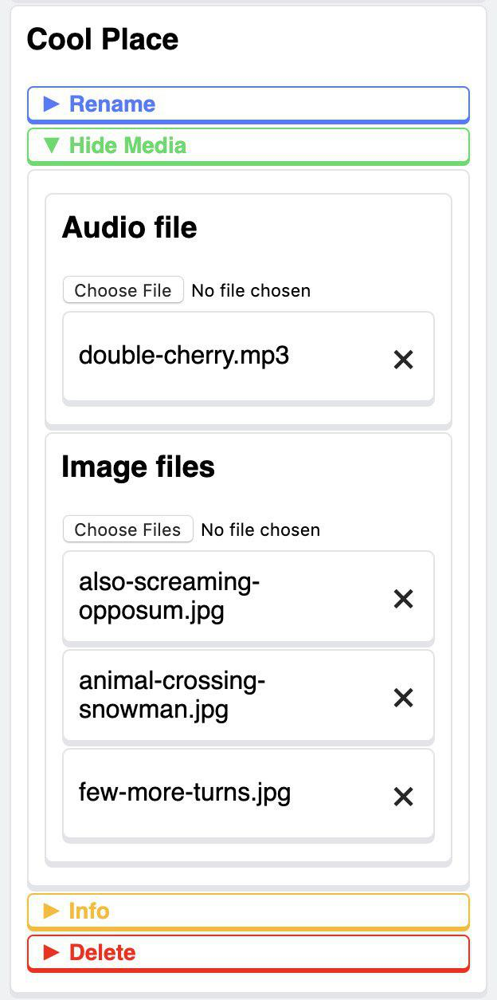
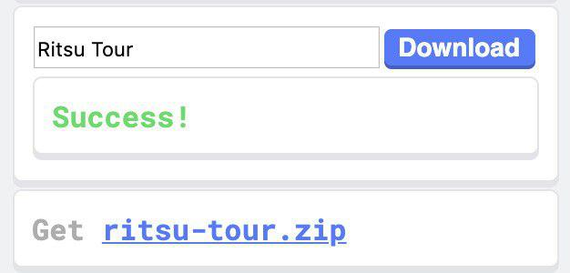
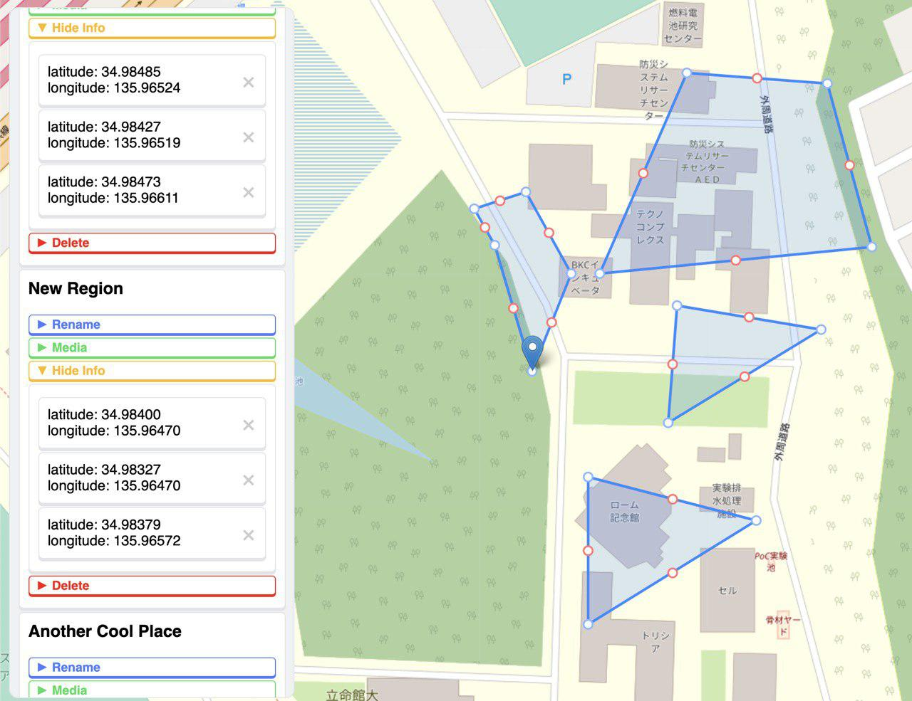

Kyoto VR MQP Team Blog
Week 5 & 6 (8/19 - 8/30): Oh Yeah, It's All Coming Together

Our project is really starting to come together! It's been all thanks to the huge amount of progress we've made over the past couple weeks. With Week 5, we knew it was time to really start pushing towards a presentable alpha product. In our initial timeline, the end of Week 6 is about when we stated we would have our alpha complete. At the start of Week 5, we knew we had a lot of work to do to take all of the cool and important features we had been making and combine them into something that looked like a real application. So on the application side of things, we got started working on what would be the user interface for our alpha application, and potentially the final product.
The first step in this process was simply learning how Unity's UI worked, and what features it offered for UI design. After spending some time researching and testing different things, we began development of the alpha UI. We knew that the app would be used on smartphones, so we needed to put some thought into layouts that would be comfortable to interact with on a standard phone screen. We also needed to bring together all of the features and UI elements that we had been creating separately over the past few weeks. In some cases this was as easy as dragging and dropping the Unity assets from one scene into the next, like with our Audio Slider and Play/Pause buttons for audio tour files. In other cases, this meant creating an actual UI element for a feature that had previously been implemented without one, like our buttons for swapping which AR content was on display. By the end of the week, we had a UI that we were really proud of.
Lastly, coming out of week 5, we also implemented a new and important feature for AR content. Atticus explained that as AR content goes, he would like to primarily show off images to the user, like of traditional art and the like. So to allow for this and integrate with the Editour web app we made for creating tours, we created a feature that takes the images you add to a tour in the web app, and then creates AR content of them by creating a plane primitive in Unity, assigning the image as a texture, and placing the plane in the AR environment, displaying it to the user in AR. We're still ironing out a few issues and bugs we encountered along the way, but it's a great step towards our final product.
Week 6 has been about turning our UI elements into what they need to be for our alpha application. Last week, when we made the UI, it was mostly to get a sense of what it would look like and to make sure all of the features would work correctly in our UI. But this week, we had more practical problems with the UI to tackle. For example, since anyone can make a tour for our application using our web app, we needed a way for our UI to essentially build itself based on the image files the user adds to their tour in Editour. So, we changed our dropdown menus so that they would dynamically populate themselves with buttons bearing the proper images from each zone of the tour. In addition to this, we needed the UI to change based on which zone of the tour the user is currently in; so the dropdown should only show the buttons for content in that specific zone and should hide the others, and it should show no buttons at all if the user isn't inside a zone. We have this working too, so now only the appropriate content buttons will appear inside a given zone. Lastly, for the audio tour portion of our application, we were able to make it so that the audio tour for the region you're in plays automatically as you enter the region, per Atticus's request.
Lastly, a lot of important work got done on our tour-creation web app, Editour, both on the backend and the frontend. Now, it is possible to load a tour from the server back into the editor to resume work on that tour. You can add and remove the image files and audio files associated with each region without having to re-download those files. This means that if you are working with a big tour that has megabytes of content in it, you can resume editing almost instantly.
If you do want to see exactly what files the tour contains, you can now easily download the zip directly from the UI.
There are also huge improvements to the editing experience. Before, if you wanted to change the shape of a region, you would have to delete the region and draw a new one. Now, you can change the shape of a region in any way that you please! You can add points, delete points, and drag points around to fine tune the geographic region to the exact needs of the tour. We expect this will be useful as we do field testing of the tour.
